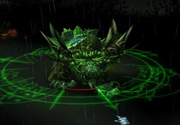

Give all your drones to Melee heros. They need it to stay alive.
Save W to clean yourself from boss's slowing skill.
After you get in melee range from boss, use QFQRQTQEQ combo to deal maximum damage.
If boss is 80 or more mana, try to run around instead of facing him directly to be able to escape when needed.
Use forest around to your advantage, it helps to reduce knockback from skills.
Be carefull when you autoattack, if you start attacking treants that are around it will put you in bad position.